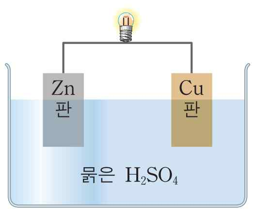

문제 4
단계 1
(1) 황산 철(II) 수용액에 아연판을 넣어두면 아연이 녹고 철이 석출된다. 이러한 반응을 설명하기 위하여 금속의 이온화 경향을 정의하고, 아연과 철 중 이온화 경향이 큰 금속을 결정하시오.
(2) 아연과 구리를 이용하여 화학 전지를 만들 수 있는데, 화학 전지가 무엇인지 설명하시오.
단계 2
(1) 아연판과 구리판을 묽은 황산에 넣고 도선으로 연결할 때, 산화 전극과 환원 전극을 결정하고, 각 전극에서 일어나는 반응을 설명하시오.
(2) 아래 전지는 전류가 흐르기 시작하면 전압이 급격하게 떨어지게 되는데, 그 이유를 설명하시오. 이러한 문제를 해결하기 위해서 염다리를 이용할 수 있는데, 염다리를 이용한 전지 구성을 설명하시오.

단계 3
실험실에서 0.2 M 염산(HCl) 10 mL를 중화하고자 한다. 0.01 M 수산화 나트륨(NaOH) 수용액으로 중화한다면 몇 mL의 수산화 나트륨 수용액이 필요한 지 계산하시오.